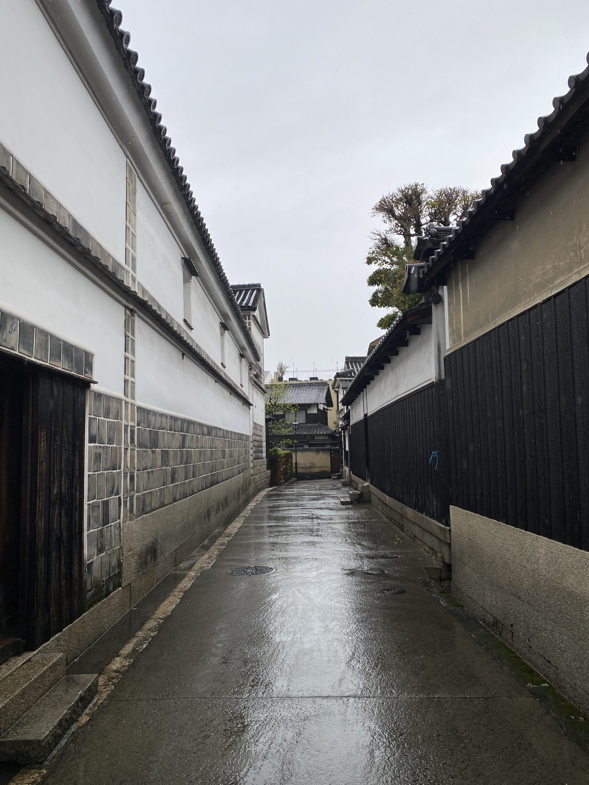

ACCESS
蔵の街、嘉右衛門町へ
蔵の街として知られる嘉右衛門町の一角、伝統的建造物群保存地区の中に店を構えています。珈琲と向き合う時間を過ごしに、どうぞお立ち寄りください。
SHOP INFO
店舗情報
| 屋号 | 珈琲 無垢 |
|---|---|
| 住所 | 〒328-0072 栃木県栃木市嘉右衛門町9-13 |
| 電話 | 070-7587-8849(タップでお電話いただけます) |
| 営業時間 | ご確認中 |
| 定休日 | ご確認中 |
| 駐車場・アクセス補足 | ご確認中 |
※営業時間・定休日・駐車場情報は現在確認中です。最新情報はお電話またはInstagramにてご確認ください。

BEFORE YOU VISIT
ご来店にあたって
店内にはカウンター席があり、1人でのご来店も入りやすい雰囲気です。
その日の気分や好み、食べたい甘味をひとこと伝えていただければ、店主がそれに合う一杯をご提案します。
珈琲がお好きな方はもちろん、普段あまり飲まれない方、苦手な方にも、無理のない一杯をご提案できればと思います。
会話を楽しみながら、ゆっくりとお過ごしください。
ご予約・お問い合わせについて
お電話、またはInstagramのDMよりお問い合わせください。